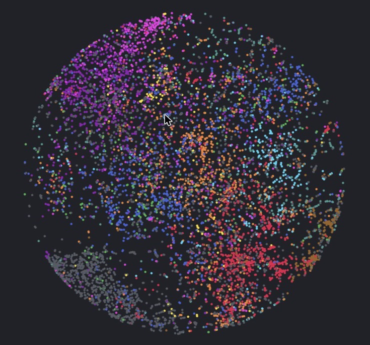

ADC 2026 · Shiva Kannan
The Space Between Presets
Slides, papers, and the app from the talk.

Pho
A voice note app for plugins: record through your synths and effects, and find sounds across all your presets by sound or by words.
Only emails about the Pho beta.
Further reading
- LAION-CLAPWu et al., ICASSP 2023
- Timbre semantics in CLAPDo joint language-audio embeddings encode perceptual timbre semantics?
- TimbreCLIPJonason & Sturm, 2022
- SynthScribeMultimodal tools for synthesizer sound retrieval
- CTAGCreative text-to-audio generation via synthesizer programming, ICML 2024
- Neural Proxies for Sound SynthesizersCombes et al., JAES 2025
- FM-SynAPSEFM synthesizer audio-parameter shared embeddings
- Synth-JEPARenderer-free synthesizer parameter search